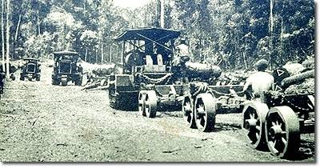

Ever since 1839, Guatemala’s claim and negotiations started after the united provinces of central America were dissolved, then after Guatemala claimed sovereignty over Belize as “inheritance” from Spain. However, this was not the case. The claim was rejected by the British because neither Spain nor any Central American entity had ever occupied Belizean territory. It was not until British privateers and shipwrecked sailors also known as the “Baymen” established settlements in Belize and began working the land and harvesting logwood and eventually Mahogany for export to Europe, this would later commence the development of the country increasing the number of settlers and eventually establishing the economy of Belize with Mahogany and logwood being its two biggest exports.
